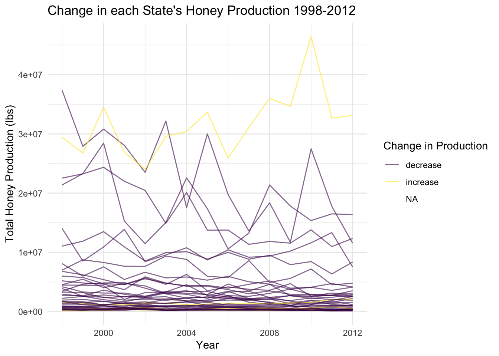
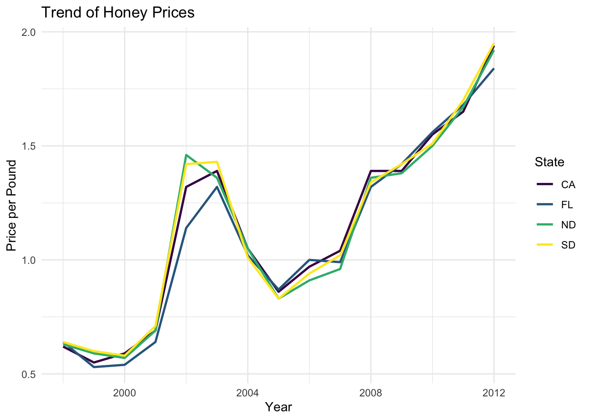

I chose a data set looking at US states from 1998-2012 with several variables pertaining to honey. There are 626 observations of 8 variables. These ‘honey’ variables are totalprod (total production of honey), stocks (the amount of honey stored), numcol (number of bee colonies producing honey), yieldpercol (honey yield per colony), along with priceperlb (average cost of honey per pound), and prodvalue (average value of the honey production). Each of these ‘honey’ variables pertains to a given state in a given year. I’ll be looking into the trend of total honey production in the top-producing states, price movements over the given time horizon, and the correlations between several variables. The data set can be found at https://github.com/rfordatascience/tidytuesday/blob/master/data/2018/2018-05-21/week8_honey_production.zip and we can also glance at it below:
kable(head(us_honey))
state
numcol
yieldpercol
totalprod
stocks
priceperlb
prodvalue
year
AL
16000
71
1136000
159000
0.72
818000
1998
AZ
55000
60
3300000
1485000
0.64
2112000
1998
AR
53000
65
3445000
1688000
0.59
2033000
1998
CA
450000
83
37350000
12326000
0.62
23157000
1998
CO
27000
72
1944000
1594000
0.70
1361000
1998
FL
230000
98
22540000
4508000
0.64
14426000
1998
Part 1:
top_prod <- us_honey |>group_by(state) |>summarise(totalhoneyprod =sum(totalprod)) |>arrange(desc(totalhoneyprod)) |>slice(1:10)kable(top_prod,caption ="Top 10 States: Cumulative Honey Production 1998-2012",col.names =c("State", "Honey Production (lbs)"))
Top 10 States: Cumulative Honey Production 1998-2012
State
Honey Production (lbs)
ND
475085000
CA
347535000
SD
266141000
FL
247048000
MT
156562000
MN
144360000
TX
104904000
WI
81833000
MI
72820000
ID
66160000
## Take the top 4 states from the prior tabletop4_df <- us_honey |>filter(state =="ND"| state =="CA"| state =="SD"| state =="FL")nd_df <- us_honey |>filter(state =="ND")
In the above graph, we see the total honey production among the top states over the time period 1998 to 2012. North Dakota stands out as a leader in production.
Next, we can look at positive or negative changes in production from the start (1998) to the end (2012):
## Calculate difference between totalProd 2012 and 1998honey_diff <- us_honey |>filter(year =="1998"| year =="2012") |>group_by(state) |>summarise(diff_prod =diff(totalprod))## New variable 'change' for an increase or decrease in totalProdhoney_diff <- honey_diff |>mutate(change =if_else(diff_prod >0,true ="increase",false ="decrease"))honey_joined <-left_join(us_honey, honey_diff)ggplot(honey_joined, aes(x = year, y = totalprod)) +geom_line(aes(group = state, colour = change), alpha =0.6) +theme_minimal() +scale_colour_viridis_d(name ="Change in Production") +labs(title ="Change in each State's Honey Production 1998-2012",x ="Year",y ="Total Honey Production (lbs)")

In the above graph, we can see each state’s total honey production. Obviously there are fluctuating levels of production over this time horizon, but I just wanted to look at the difference between 2012 and 1998. I created a variable to represent this difference in totalprod. A negative change (decrease) results in a purple line, and a positive change (increase) results in a yellow line. From that, only 4 states had an increase in production: North Dakota, North Carolina, Mississippi, and Kentucky.
Next, we can look at price movements over the time period:
ggplot(top4_df, aes(x = year, y = priceperlb, colour = state)) +geom_line(linewidth =0.9) +labs(x ="Year",title ="Trend of Honey Prices",y ="Price per Pound") +theme_minimal() +scale_colour_viridis_d(name ="State")

In the above graph we can see that the top honey producing states follow a similar trend for priceperlb (average cost of honey per pound in each state). Given demand/supply factors, regulations, and more, it would make sense that there are comparable price trends over time.
Part 2:
A number of the ‘honey’ variables appear to be similar and could potentially have high correlations. This includes totalprod, numcol, stocks, and yieldpercol. Let’s look at the correlations between each of these variables:
Above is a plotted correlation matrix that shows the correlation(-1 to 1) between each variable. Total production of honey correlates highly with the number of colonies and honey stocks for each state. That is, higher production is associated with a larger number of bee colonies and larger honey stocks.
We can also use ggpairs to look at the correlation between each pair of variables. It shows the pairwise relationships with scatterplots:
Once again, we see high correlation between numcol and total production, given that more bee colonies likely yields higher production of honey. There is also relatively high correlation between stocks and totalprod, likely because higher levels of production may lead to a surplus that is stored in honey stocks.
Conclusion:
Through these visualizations, my initial questions are answered. I also learned some interesting things about the honey industry, like certain metrics used (yieldpercol, stocks), the industry leaders, and trends over time. I didn’t encounter any major limitations, but I’m curious to see more variables pertaining to the honey industry. In the future, I would be interested in fitting a regression model to see which variables are good predictors of something like total honey production.
Connection to Class:
Lately in class we have looked at certain trends over a time frame, like stock prices. We also looked at the relationship between several variables with a correlation matrix. With that, I wanted to incorporate these aspects from class into this blog post.